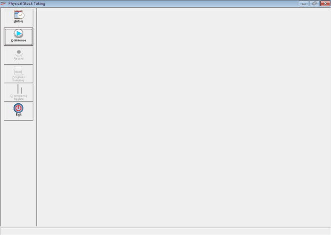

The physical stock taking section of Shoper 9 is meant for recording the physical stock of items in your store. You can compare the same with the computed stocks (equivalent to book stocks), generate necessary reports on discrepancy and update the discrepancies to correct the computed stocks.
How to reach: Stock > Stock Take > Physical Stock Management
Using this option, you can ensure that the computed stock of the items is same as the physical Stock.
Physical Stock Taking Process in Shoper 9 allows you to carry out the following:
Record the stock of each item accurately
Generate a discrepancy report that gives a comparison of the physical stock and computed stock
Update the discrepancies found as Stock Adjustments
Note: Mere recording of the physical stocks do not affect the stock figures maintained in Shoper 9.
Once the physical stocks are recorded in Shoper 9, the same can be reported by using any one of the two reports; namely physical stock report and comparison report of physical stocks and computed stocks.
You have two options of updating the physical stock recorded into Shoper 9. One is to replace the computed stocks maintained by Shoper 9 with the physical stocks recorded by you. The other is to update the stock discrepancies as positive or negative adjustment to the existing stock figures.

The process of Physical Stock Taking comprises of the following:
Note: Stock taking activity is said to be complete when all the above options are carried out one by one in the order they appear.